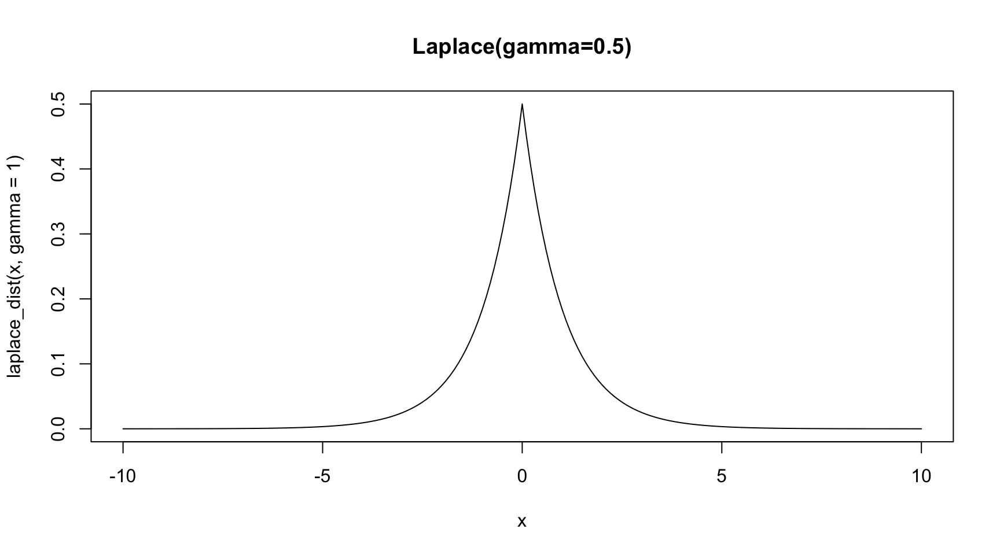
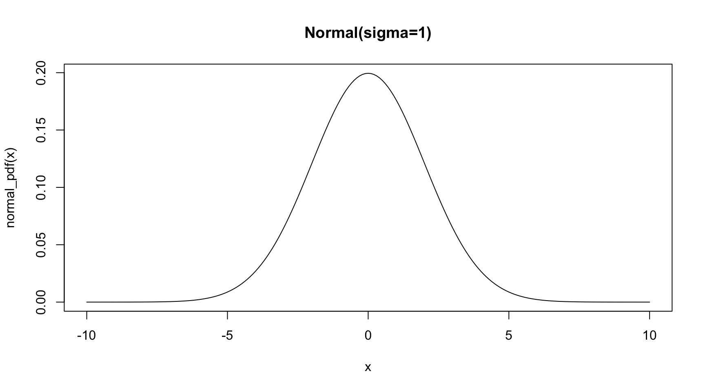

Showing Laplace and Gaussian priors in Bayesian regression are equivalent to Lasso and Ridge regularization
Bayesian Linear regression:
When performing ordinary linear regression using maximum likelihood, we model the noise around \(y\) as being generated from a gaussian distributed process - conditional on the data \(X\) and estimated model parameters \(\beta\) and \(\sigma\):
We can formulate our estimate of the coefficient in a bayesian way if we model \(\beta\) as a random variable (rather than a fixed quantity as per frequenist thinking):
\(p(Y|\beta,X,\sigma)\) is the likelihood function
\(p(Y|X,\sigma)\) is the evidence (the data we feed into the model)
\(p(\beta|X,\sigma)\) is the prior for the coefficient
Now in frequentist regression, we assume no prior at all: \(\beta\) is fixed, so \(p(\beta|X,\sigma)=p(\beta)=1\), regardless of the evidence observed. Thus we are just left with finding the coefficients that maximise \(p(Y|\beta,X,\sigma)\).
By taking the negative log likelihood, we find this is identical to finding the coefficient values that minimise the sum of squared residuals (see the derivation here):
However, we could use other types of priors, with mass around zero, to apply regularization on our coefficients.
Using Laplace priors to shrink coefficients:
Regularization aims to eliminate some of our predictors to create a more parsimonious model in a systematic way, and/or reduce their magnitude to prevent overfitting.
Picking a prior for our coefficient that is concentrated at zero can help achieve this - for example, we could use a Laplace distribution, with a location parameter \(\mu\) of zero as visualised below:
Code
laplace_dist <-function(x, mu =0, gamma =1) { laplace_pdf <-function(x,mu,gamma) {return(exp(-abs(x-mu)/gamma)/(2*gamma) ) } y =sapply(x, FUN =function(i) laplace_pdf(i,mu,gamma))return(y)}x =seq(-10,10,0.1)plot(x=x,y=laplace_dist(x, gamma=1),type='l',main='Laplace(gamma=0.5)' )

Not only does the Laplace pdf increase when closer to zero, but it increases at an accelerating rate. Thus, we can imagine that the closer the likelihood estimate of the coefficient is to zero, the greater the influence of the prior.
Laplace priors ~ Lasso Regression
Recall that the probability density function of Laplace is \[
f(x|\mu,\gamma) =
\frac{1}{2\gamma}
\exp{ \left\{
\frac{x - \mu}{\gamma} \right
\} }
\]
Then the prior can be written as the maximum likelihood across the estimated coefficients each of the \(K\) features in the model, for a given penalty importance \(\lambda\): \[
\displaylines{
\begin{align}
p(\beta|X,\sigma) \sim p(\beta)
& = \prod_{k=1}^{K}{
\frac{1}{2 \gamma}
\exp{\left\{ \frac{ -\mid \beta - \mu \mid}{\gamma} \right\}}
}
\\ \\ & = \prod_{k=1}^{K}{
\frac{1}{2 \gamma}
\exp{\left\{ \frac{ -\mid \beta \mid}{\gamma} \right\}}
}
\end{align}
}
\]
This is how the prior is defined in Tibshirani (1996). Since the prior is assumed before any data is observed, intuitively \(\beta\) should not need conditioning on \(X\).
However, Park and Casella (2008) found that not conditioning on \(\sigma^2\) can result in non-unimodal posterior, so in practice a non-informative scale-invariant marginal prior \(\pi(\sigma^2) = 1/\sigma\) on \(\sigma^2\) is used.
Now if set this as the prior, we can derive the cost function that we aim to minimize when \(X\) is observed.
Note that terms that do not vary with the choice of \(\beta\) drop out
Key point
Hence setting a Laplace prior on the coefficients is - almost - equivalent to running L1 regularization, where \(1/\gamma\) is the parameter influencing the penalty size.
Although there is sparsity in the mode of the prior, when combining this with the likelihood distribution, the sparsity will not continue into the posterior distribution. In practice, if the posterior of \(\beta\) is sufficiently small, we would want to drop it - so a threshold value for the size at which coefficients are zero-oed out is set as a hyperparameter.
Using Gaussian priors to shrink coefficients:
In a similar way to before for Lasso, we set our coefficient priors to each have a Gaussian distribution, with a location parameter \(\mu=0\):
Code
normal_pdf <-function(x, mu =0, sigma =2) { z = (x-mu)/sigma y = (2*pi*sigma^2)^(-1/2) *exp(-0.5*z^2)return(y)}x =seq(-10,10,0.1)plot(x=x,y=normal_pdf(x),type='l',main='Normal(sigma=1)' )

Gaussian priors ~ Ridge Regression
The gaussian prior can be written as the maximum likelihood across the estimated coefficients each of the \(K\) features in the model, for a given penalty importance \(\lambda\):
Hence setting a Gaussian prior on the coefficients is - almost - equivalent to running L1 regularization, where the variance of the prior - \(\sigma^2\) is the parameter directly influencing the penalty size.
References
Park, Trevor, and George Casella. 2008. “The Bayesian Lasso.”Journal of the American Statistical Association 103 (482): 681–86. https://doi.org/10.1198/016214508000000337.
Tibshirani, Robert. 1996. “Regression Shrinkage and Selection via the Lasso.”Journal of the Royal Statistical Society: Series B (Methodological) 58 (1): 267–88. https://doi.org/10.1111/j.1467-9868.2011.00771.x.